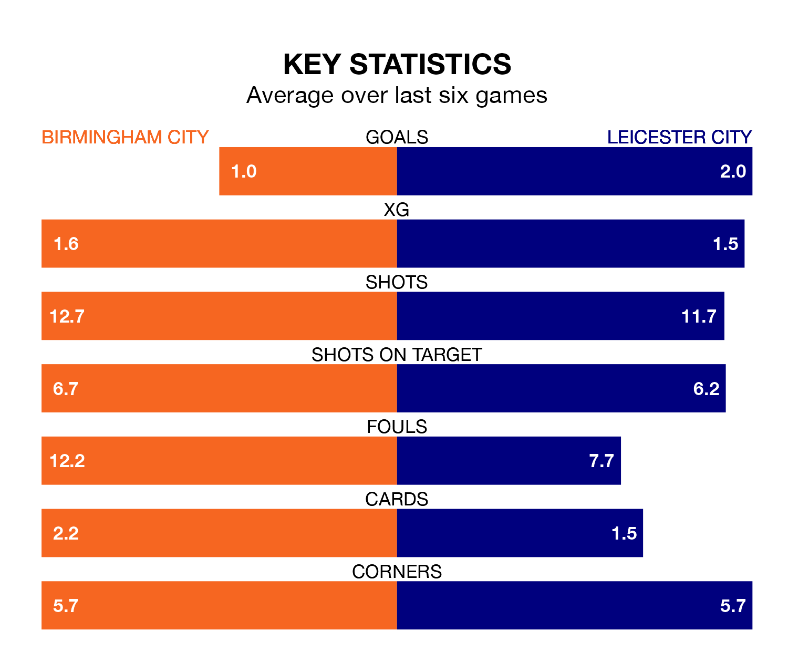

Leicester City are strong favourites to take all three points despite Birmingham City's home advantage in Monday's late match at St Andrew's.
*Betting Company* are offering odds of 1.57 on Leicester sealing the win, with the visitors sitting first in the Championship table.
Birmingham, who are 17th in the league and 26 points behind the Foxes, are priced at 5.75 to win. A draw is set at 4.
With 41 goals in 21 games so far this season, Leicester are the league's second-highest scorers with 2.0 goals per game. And they are conceding fewer than average, letting in 14 goals at a rate of 0.7 per game.
Birmingham, meanwhile, are below average scorers, with 1.1 goals per game, compared to a league average of 1.4. They have conceded 1.4 goals per game.
With Mads Hermansen between the sticks, Leicester City can rely on one of the league's safest pair of hands. He has kept seven clean sheets in his 20 appearances this season, and only one other 'keeper – West Bromwich Albion's Alex Palmer – has been able to prevent the opposition scoring on more occasions in the Championship.
In Birmingham City's net, John Ruddy has five clean sheets in 21 games. He has conceded a goal every 76 minutes, twice as often as the 150 minutes between goals for Hermansen.
The Blues are in mixed form in the Championship, with two wins and a draw from their last six games.
With four wins and a draw over that period, the Foxes' form is much better – they have taken 13 points from 18, compared to the home side's seven.
Birmingham's last match was on Wednesday, a 1-0 win against Cardiff City, with Juninho Bacuna getting the goal for the Blues.
Leicester beat Millwall 3-2 last time out, also on Wednesday, with Jannik Vestergaard, Patson Daka and Ricardo Pereira on the scoresheet.
Monday's match will be refereed by David Webb, who has taken charge of 14 Championship games so far this season, issuing one red card and booking 58 players. He has awarded two penalties.
The last Birmingham game Webb refereed was a 3-1 away loss to Southampton on October 28. His last Leicester match was their 1-0 win away at Huddersfield Town on August 12.
